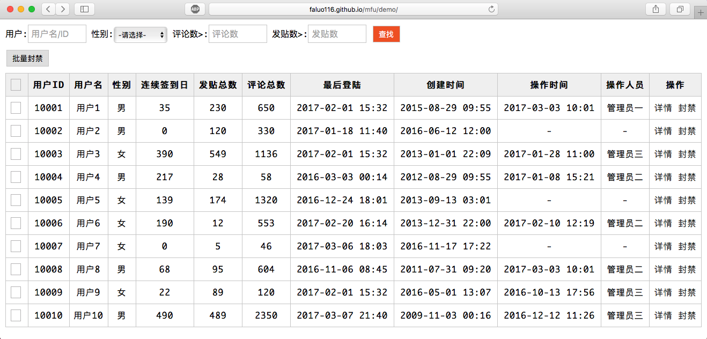

CSS_TOOLS
做为一名后端码农，我当然想把所有精力都放到后端的逻辑上，比如数据的准确性和效率。但一些前端的技术，如JS和CSS，是无法避开的。现在已经找不到用纯HTML制作的丑陋的页面了，要想把页面做得美观易用，哪怕是后端的开发，对前端的技术也要有点了解。所以要合理分配，用最少的力度把后端页面调整到大方易用（不是华丽漂亮）。于是我整理了一套CSS工具，尽量少用DIV创造新控件，只把HTML默认的控件做最小力度的重绘，让它们排列起来简洁大方。在开发页面时导入CSS文件后，只要照常写默认的HTML语法即可。下图是用这套CSS_TOOLS做得DEMO，也可以在这里实际访问这个DEMO，点右键看看页面的源码，你会发现它写在页面中的css外码非常少·。这里还有一份简单的说明文档。

(Fin.)